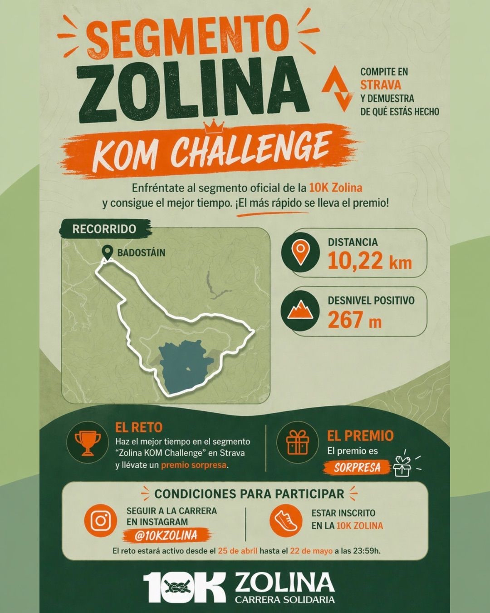

Premio
Todos los participantes reciben un pequeño premio. La persona que consiga el mejor tiempo validado en el segmento oficial se llevará un premio especial.
Segmento Zolina
¡Premio asegurado! Completa el recorrido oficial de la 10K Zolina, sube la actividad a Strava y demuestra quién marca el mejor tiempo en el segmento.
Todos los participantes reciben un pequeño premio. La persona que consiga el mejor tiempo validado en el segmento oficial se llevará un premio especial.
Segmento oficial de la 10K Zolina con salida y zona de referencia en Badostáin.
Para entrar en la clasificación del reto debes cumplir las condiciones indicadas por la organización.
Cartel oficial
